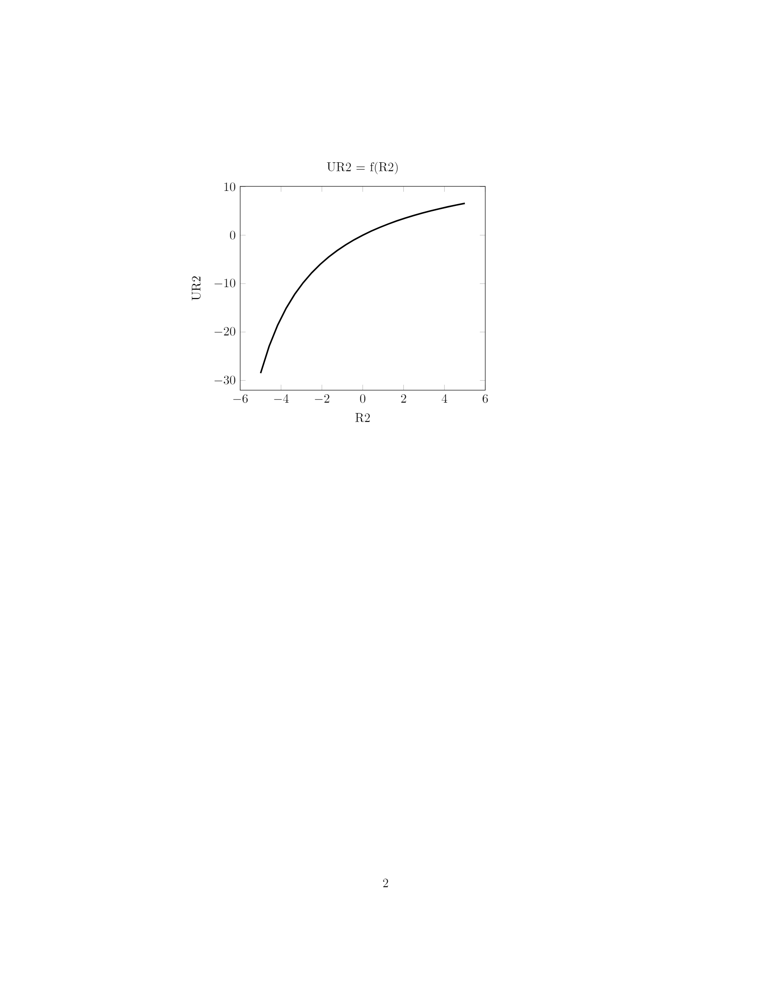
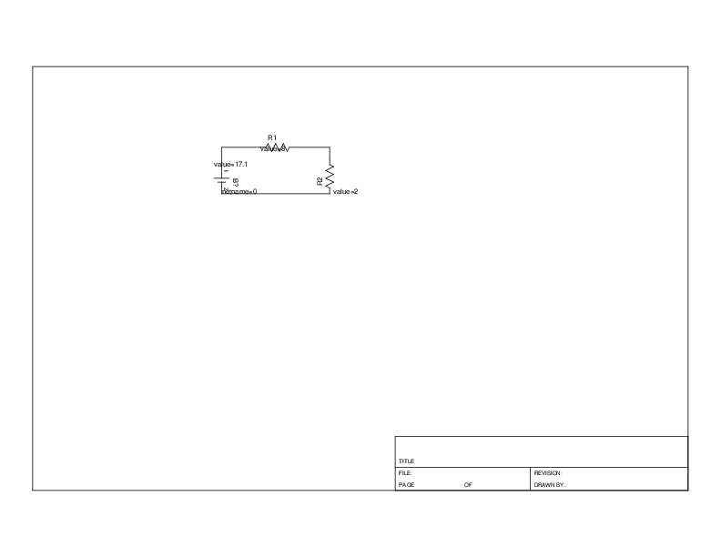
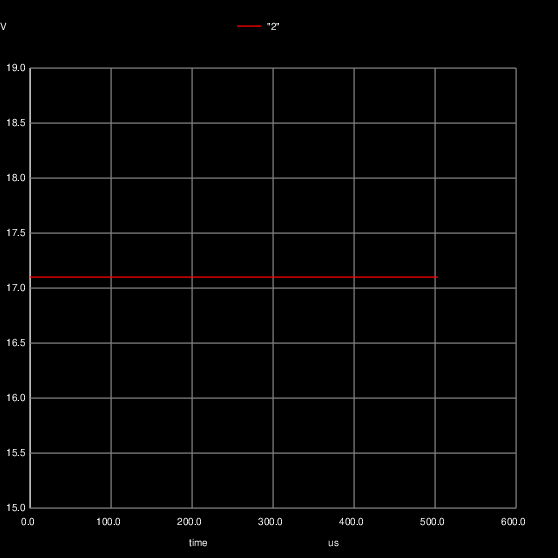
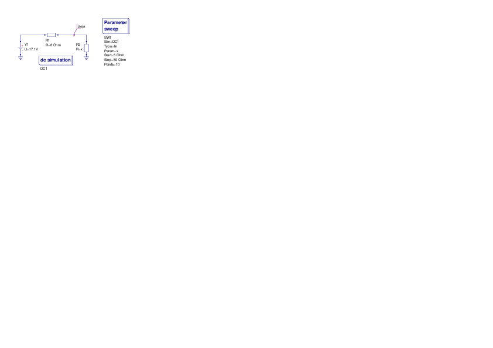
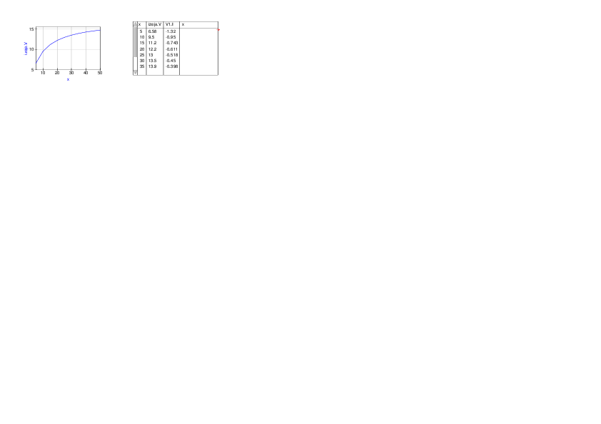

"Vienkāršu elektrisku shēmu modelēšana"
Nikita Rahmanins
171REB171
May 2018
Saturs
1. Teorētiskā daļa
1.1. Ķēdes aprēķins
V1 = 17.1 V
R1 = 8 Ohm
R2 = 2 Ohm
Lai aprēķināt spriegumu uz R2 vajag izmantot sprieguma dalītāja formulu. [1] [2]
I = V1/(R1+R2) = 1.71A
UR1 = I*R1 = 13.68 V
UR2 = I*R2 = 3.42 V
No šīm aprēķiniem es izveidoju tabulu ar rezultātiem (1.1)
1.1. Ķēdes elementu spriegumi un vērtības
| R1 |
8 Ohm |
| R2 |
2 Ohm |
| V1 |
17.1 V |
| UR1 |
13.68 V |
| UR2 |
3.42 V |

Figure 2.1: Elektriskā shēma no GEDA

2. Praktiskā daļa
2.1. Darbs ar GEDA programmām
2.1.1. Darbs ar gschem
Ar GEDA komandu gschem es izveidoju vienkāršo shēmu (2.1)
2.1.2. darbs ar gnetlist
* Spice netlister for gnetlist
V1 2 0 17.1
R2 0 1 8
R1 0 1 2
.END
2.1.3. darbs ar ngspice
Ar ngspice es izveidoju divus grafikus. Att. (2.2) un (2.3)

Figure 2.2: Grafiks no ngspice (1)

Figure 2.3: Grafiks no ngspice (2)
2.2. Darbs are QUCS programmām
2.2.1. Principāla shēma

Figure 2.4: Principāla shēma
Shēma ar visiem elementiem, R2 ir aizvietots ar x lai to izmantot kā argumentu Parameter Sweep analīzē. (2.4)
2.2.2. Tabula un grafiks

Figure 2.5: Tabula un grafiks
Kā ir redzams no grafika spriegums uz R2 mainās proporcionāli R2 pretestības izmaiņai pret kopējo pretestību. (2.5)
Izmantotas literatūras saraksts
- [1] Andrejs Strauts. Elektrotehnikas teorētiskie pamati, lekciju konspekts. –Rīga,
RTU, 2008, -197 lpp.
\bibitem{gramata2}
- [2] Kārlis Brīvkalns. Ķēžu teorija. Vadonis Ķēžu teorijas studijām: praktiskās
nodarbības, laboratorijas darbi, MatLab programmas,PSpice pielietojums. –Rīga,
RTU, 2008, - 93 lpp.